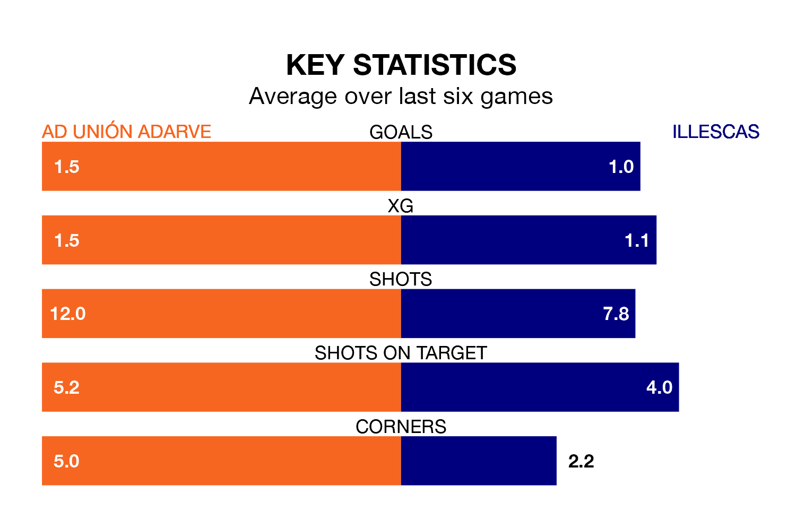

AD Unión Adarve face a challenge to maintain their high-scoring form at home against a tight Illescas defence on Sunday.
With 37 goals in 27 games, Unión Adarve are the third-highest scorers in the Segunda División RFEF Group 5 ahead of the 11am kick-off.
They face an Illescas side who have scored 30 in 27 matches, but conceded only 22 goals, putting them joint-third among the league's tightest defences – only SS Reyes and Atlético Paso have conceded fewer goals.
Illescas are fifth in the table after 27 games, of which they have won 11 and drawn nine, earning 42 points.
Unión Adarve are three places behind the visitors in eighth, with nine wins and 11 draws putting them on 38 points.
The home side are in mixed form in the Segunda División RFEF Group 5, with two wins and two draws from their last six games.
And also with two wins and two draws over that period, Illescas's form is identical – they have both taken eight points from 18.
Unión Adarve's last match was on March 17, a 2-1 loss against Atlético Paso, with Alberto Alburquerque Reus getting the goal for Unión Adarve.
Illescas drew 0-0 with SS Reyes last time out, also on March 17.
Updated: 10:19 (UTC), 22/03/24